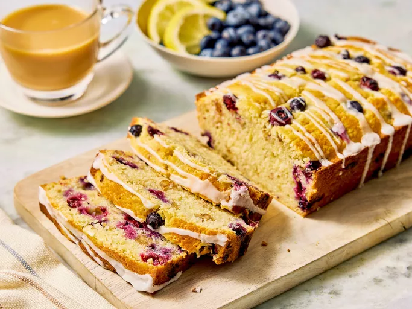

Lemon Blueberry Bread:

Brighten your day with this sweet lemon blueberry bread that's bursting with juicy berries. A simple glaze topping made with powdered sugar and lemon juice adds an extra level of tangy flavor.
Recipe:
- For Bread:
- White sugar
- Melted butter
- Eggs
- Lemon juice
- All-purpose flour
- Baking powder
- Salt
- Milk
- Blueberries
- Lemon zest
- For the glaze:
- Powdered sugar
- Lemon juice
Steps:
- Beat the sugar, butter, eggs, and lemon juice together.
- Combine the dry ingredients in another bowl.
- Stir the dry mixture into the egg mixture alternately with milk.
- Fold in the berries, nuts, and zest.
- Bake the bread until a toothpick comes out clean.
- Make the glaze, then drizzle it over the warm bread.
Home